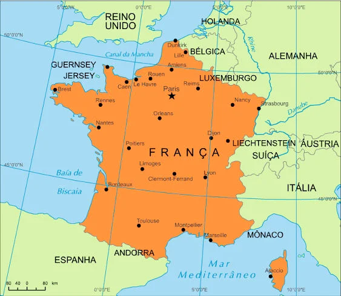

França, oficialmente República Francesa, é um país localizado no oeste da Europa. É o terceiro maior país do continente europeu e um dos mais antigos do mundo. É banhado pelo Oceano Atlântico e pelo Mar Mediterrâneo. Faz fronteira com Alemanha, Andorra, Bélgica, Espanha, Itália, Luxemburgo, Principado de Mônaco e Suíça.
A bandeira tricolor é o emblema nacional da França. Ela é composta por três faixas nas cores azul, branco e vermelho, que se apresentam em sentido vertical nessa ordem, da esquerda para a direita. O branco é a cor da realeza, enquanto o azul e o vermelho são as cores da revolução. Juntas, elas têm o sentido de união entre povo e monarquia.
A França é dividida em 18 regiões e 96 municípios ou departamentos.
Antes da mudança, em 2016, as regiões metropolitanas eram 22. Passaram a ser 13:
Cinco dentre todas as regiões da França são regiões ultramarinas:
A capital Paris é a maior cidade da França. Lille, Lyon, Marselha e Toulouse são outras cidades importantes.
O hino oficial da França recebe o nome de Marselhesa. É originalmente um canto revolucionário da autoria de Claude-Joseph Rouget de Lisle, capitão do exército francês, que foi composto em 1792. O objetivo do canto era animar os soldados a lutar pelo país por ocasião da Revolução Francesa, conforme mostra frase inicial da composição musical:"
"Avante, filhos da Pátria,"
O dia da Glória chegou."
Liberdade, Igualdade e Fraternidade (em francês, Liberté, Egalité, Fraternité) é o lema da revolução francesa que se tornou patrimônio desse país que tem uma vasta riqueza cultural. Por isso, a França é muito procurada por turistas em todo o mundo, os quais totalizam o número de milhões anualmente. Museus, monumentos, praias são apenas alguns dos seus atrativos. Paris, a cidade da luz, é conhecida também como a cidade das compras. A Catedral de Notre Dame, no centro de Paris, é a maior atração do país. De estilo gótico, o início da sua construção data de 1163, demorando quase 200 anos para ser concluída. A catedral é uma obra-prima que abriga uma série de esculturas e quadros. Nela, Napoleão Bonaparte foi coroado imperador, em 1804. A Torre Eiffel, também em Paris, é um símbolo da França que demorou dois anos para ser construído, o que aconteceu em 1889. Projetada por Gustave Eiffel, tem 324 metros de altura e foi feita para a Exibição Universal de 1889. Para tanto, não deveria ser uma construção duradoura, sendo suposta a sua demolição após 20 anos de exposição. O Museu do Louvre, em Paris, recebe milhões de visitantes por ano. É, sem dúvida, um dos museus mais visitados no mundo. Uma das obras mais famosas que se encontra exposta nessa galeria de arte, que abriga mais de 35 mil obras, é a Mona Lisa, de Leonardo da Vinci. Dentre os pontos de interesse, o Arco do Triunfo oferece uma vista privilegiada, de onde é possível ver toda Paris.É uma obra de arquitetura datada de 1806. O monumento é uma homenagem ao Exército Imperial e foi construído por ordem de Napoleão Bonaparte. No que respeita à gastronomia, o queijo é um símbolo. Trata-se de uma verdadeira paixão dos franceses. No país, há centenas de variedades de queijos. Para o acompanhar, há vinho, pois a França é um dos maiores produtores da bebida em todo o mundo. A baguete, famoso pão francês, pode ser encontrada em diversas localidades.
A economia francesa fica entre as cinco primeiras a nível mundial. A França está entre os três países mais industrializados da Europa. O país, que é o maior produtor agrícola da União Europeia, produz principalmente carne, milho, trigo e vinho. O maior produtor de energia nuclear do mundo é a França que, além disso, se destaca no setor da indústria de automóveis e eletrônica.